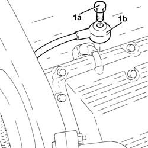

5510C48 TIMING SIDE KNOCK SENSOR - R+R
- Path
- Procedures > 55 ELECTRICAL EQUIPMENT > 5510 ENGINE IGNITION > 5510C COIL, ECU, SENSORS > 5510C48 TIMING SIDE KNOCK SENSOR - R+R
- Kind
- repair procedure (removal / refitting; the operation number is the code)
- Applies to
- engines: 3.2 V6; all production periods
- Interactive page
- https://sloeber94.github.io/elrnDB-aGt/en/#/125001611
Applies to: engines: 3.2 V6; all production periods
 Removing
Removing
 Refitting
RefittingPosition the vehicle on the ramp
Proceed with removal
Op. 4450B02 LEFT FRONT WHEEL R R
Proceed with removal
Proceed with removal
Op. 7055B65 ENGINGE BAY DUSTGUARD PROTECTION IN LEFT FRONT WHEEL ARCH R R
Proceed with removal
Proceed with removal
Op. 7055B54 UNDER-ENGINE GUARD - R R
Proceed with removal
Proceed with removal
Proceed with removal
Proceed with removal
Op. 5530B52 BATTERY DRIP TRAY/SUPPORT - R.R.
Proceed with removal
1. Undo the bolt (1a) and remove the timing side knock sensor (1b).
Op. 1008C10 POWER UNIT UPPER REACTION LINK R R
Op. 1088D24 RIGID PIPE FOR COOLANT INLET TO WATER PUMP - R + R
Op. 1072B42 LEFT HAND OR RIGHT HAND INLET MANIFOLD (ONE) - R+R
1056B62 l/h and r/h fuel pipe assembly - with injectors - r + r
Op. 1072B12 INTAKE MANIFOLD (ONE) LH OR RH - R R AND REPLACE GASKET

Applies to: engines: 3.2 V6; all production periods
Refitting
RemovingPlace the timing side detonation sensor back in its housing and fix it tightening the bolt to the recommended torque.
 | Fastening | Component | Ø | Value (daNm) |
|---|---|---|---|---|
- | Bolt | TIMING SIDE KNOCK SENSOR | M8 | (Engine crankcase side) 2.3 ÷ 2.8 |
Proceed with refitting
Op. 1072B12 INTAKE MANIFOLD (ONE) LH OR RH - R R AND REPLACE GASKET.
Proceed with refitting
1056B62 l/h and r/h fuel pipe assembly - with injectors - r + r
.
Proceed with refitting
Op. 1072B42 LEFT HAND OR RIGHT HAND INLET MANIFOLD (ONE) - R+R.
Proceed with refitting
Op. 1088D24 RIGID PIPE FOR COOLANT INLET TO WATER PUMP - R + R.
Proceed with refitting
Op. 1008C10 POWER UNIT UPPER REACTION LINK R R.
Proceed with refitting
Op. 5530B52 BATTERY DRIP TRAY/SUPPORT - R.R..
Proceed with refitting
Proceed with refitting
Op. 7055B65 ENGINGE BAY DUSTGUARD PROTECTION IN LEFT FRONT WHEEL ARCH R R.
Proceed with refitting
Op. 4450B02 LEFT FRONT WHEEL R R.
Refill the engine cooling system with coolant
Op. 0010T20 COOLANT CHECK DENSITY AND TOP UP IF NECESSARY.
Proceed with refitting
Op. 7055B54 UNDER-ENGINE GUARD - R R.
Remove the car from the ramps.
Topics linked from this page (10)
- 0010T20 COOLANT CHECK DENSITY AND TOP UP IF NECESSARY
- 1008C10 POWER UNIT UPPER REACTION LINK R R
- 1072B12 INTAKE MANIFOLD (ONE) LH OR RH - R R AND REPLACE GASKET
- 1072B42 LEFT HAND OR RIGHT HAND INLET MANIFOLD (ONE) - R+R
- 1088D24 RIGID PIPE FOR COOLANT INLET TO WATER PUMP - R + R
- 4450B02 LEFT FRONT WHEEL R R
- 5530B10 BATTERY - R+R
- 5530B52 BATTERY DRIP TRAY/SUPPORT - R.R.
- 7055B54 UNDER-ENGINE GUARD - R R
- 7055B65 ENGINGE BAY DUSTGUARD PROTECTION IN LEFT FRONT WHEEL ARCH R R